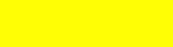
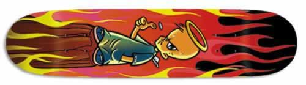
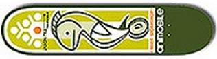
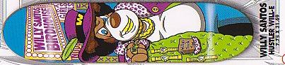
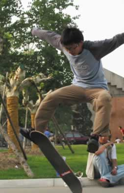

2002-2-13 下午被我自己消灭了！当我
ollie 越过 50cm 的路障的之后…… 这是我第一次亲自踩断板子！
滑板自古谁无死……永远纪念我的 Angel Boy！默哀一秒钟……
2002-2-13 下午被我自己消灭了！当我
ollie 越过 50cm 的路障的之后…… 这是我第一次亲自踩断板子！
滑板自古谁无死……永远纪念我的 Angel Boy！默哀一秒钟……以下是我曾经用过的滑板的图案，按“报销”时间排序。我很喜欢它们。
一块没有图案的板子，它是我的第一块职业滑板 — Powell K2-56。又重又结实。断于新西兰高手 Simon 脚下。找不到它的照片，为了纪念它，我用这个黄色方块表示吧。
Element 公司的 Colt Canon 板，本来是用来代替下面这个 Angel Boy 的，可惜...真是白发 Angel Boy 送黑发 Colt 啊！由于两头开裂，送给我师父 Tim， 几天以后就...唉～
 2002-2-13 下午被我自己消灭了！当我
ollie 越过 50cm 的路障的之后…… 这是我第一次亲自踩断板子！
滑板自古谁无死……永远纪念我的 Angel Boy！默哀一秒钟……
Element 公司的 Jeremy Wray 板，现其实不是这个图案，只是找不到那个 Wray 板子的照片，用另一个代替了 :)
2002-2-13 由于下午 Angel Boy 牺牲，休息了1年的 Wray 重出江湖！想当初我是觉得它太烂才换了新板，现在一看，居然比 Angel Boy 一个小时之前还要新。真是人生起伏，东山再起啊。嘿嘿！
后服役于 cicile dd。现已退休。
一个 Alienworkshop Animobile Jason Dill(2002.11退休)
(2003.3- 服役于猪草)

我的新 Birdhouse 滑板(服役中)

我和我的 Birdhouse (中文音译“不得好死”)。

谢谢小粽子！抓到我精彩的瞬间。哈哈！